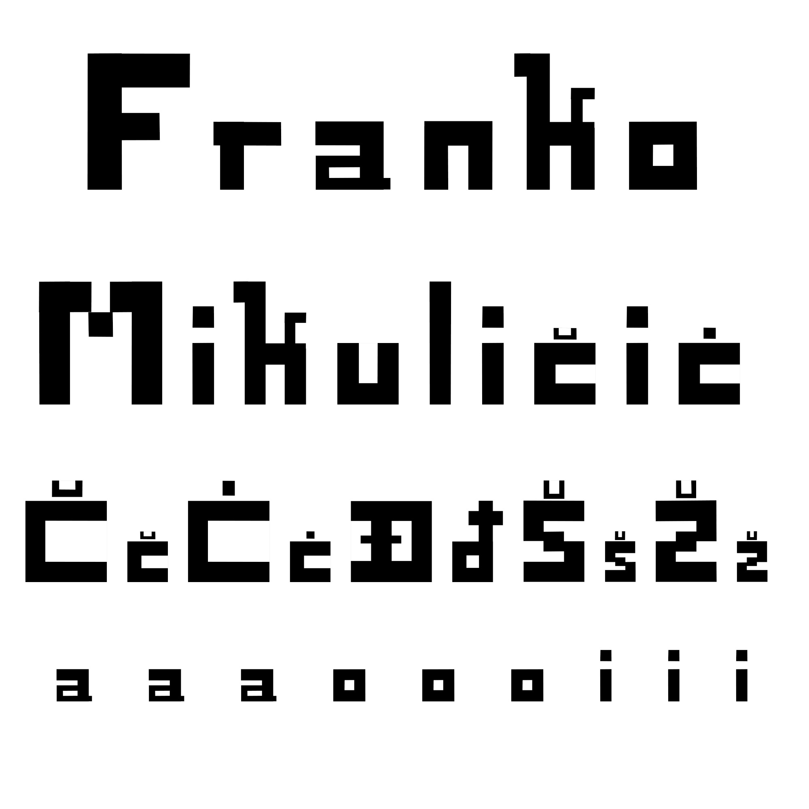
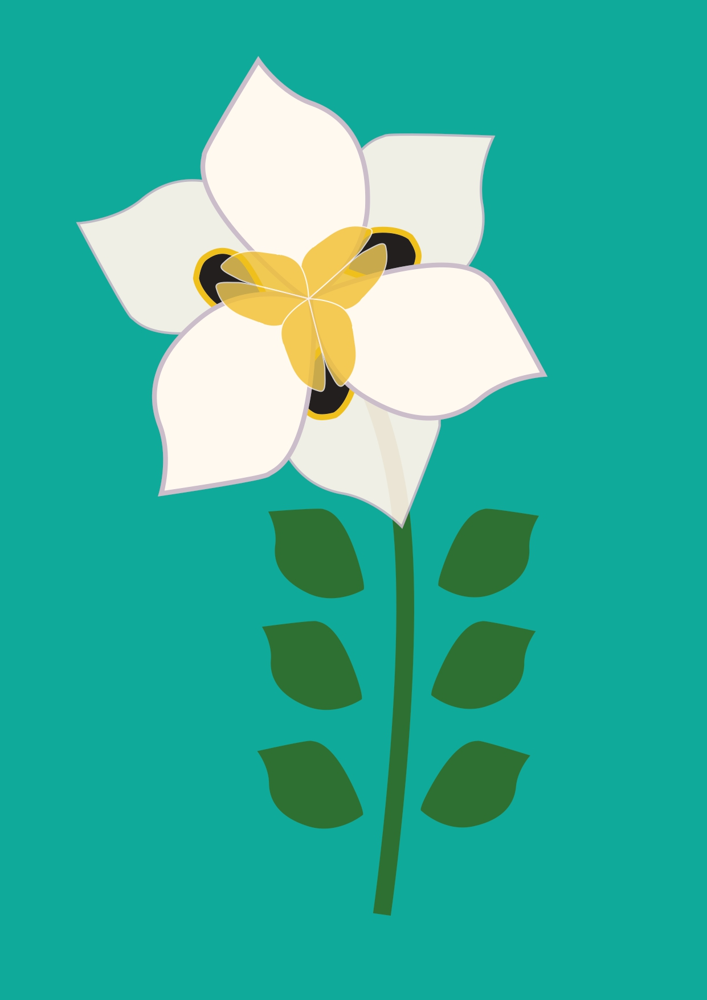
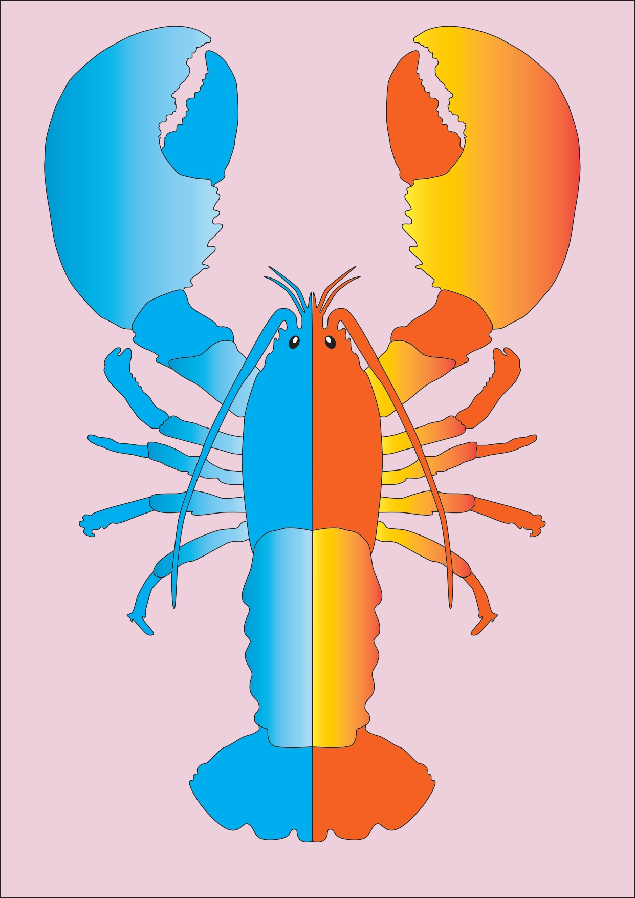
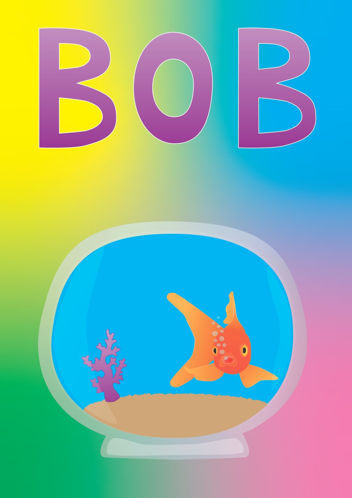
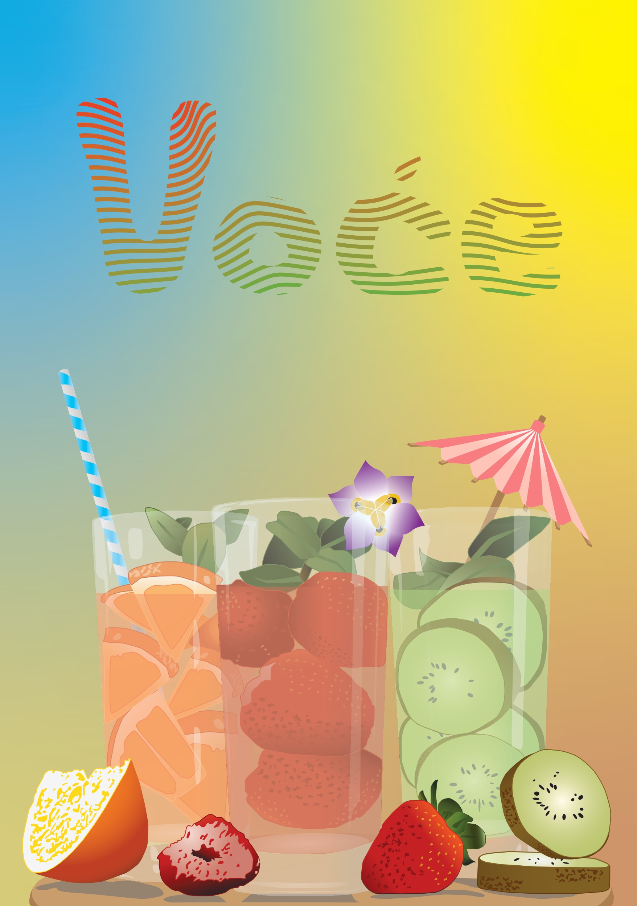
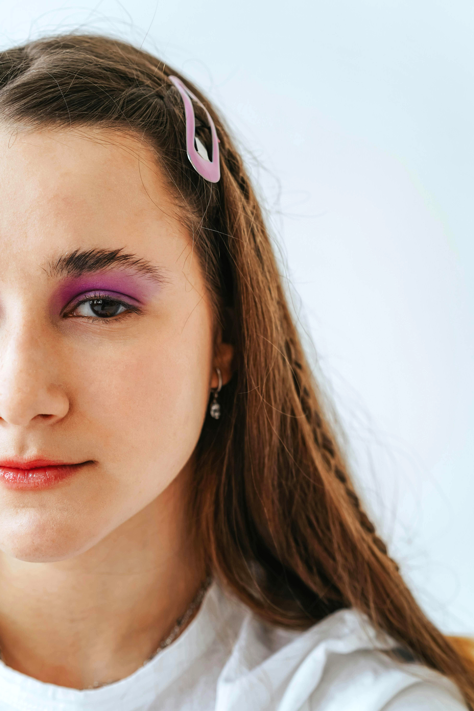
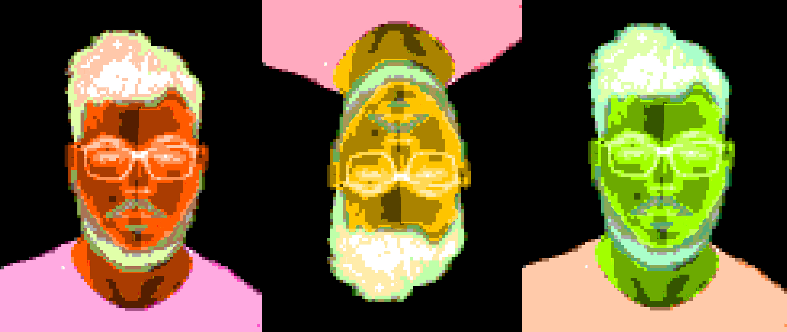
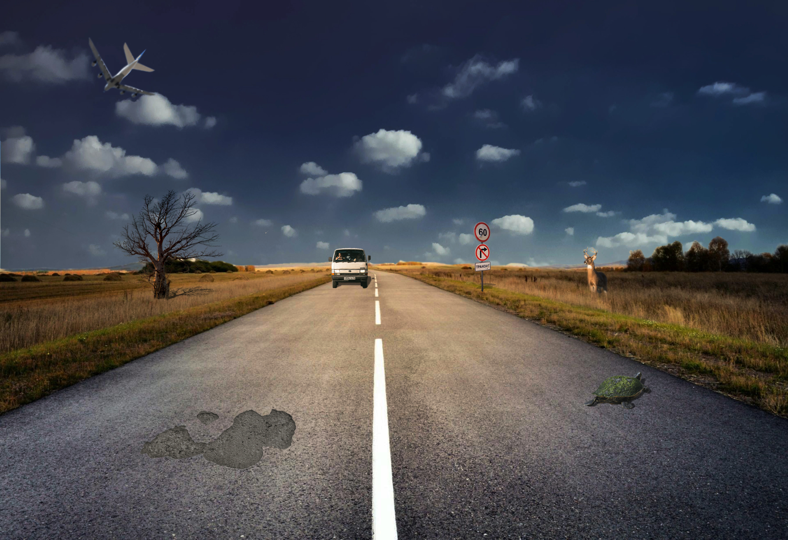
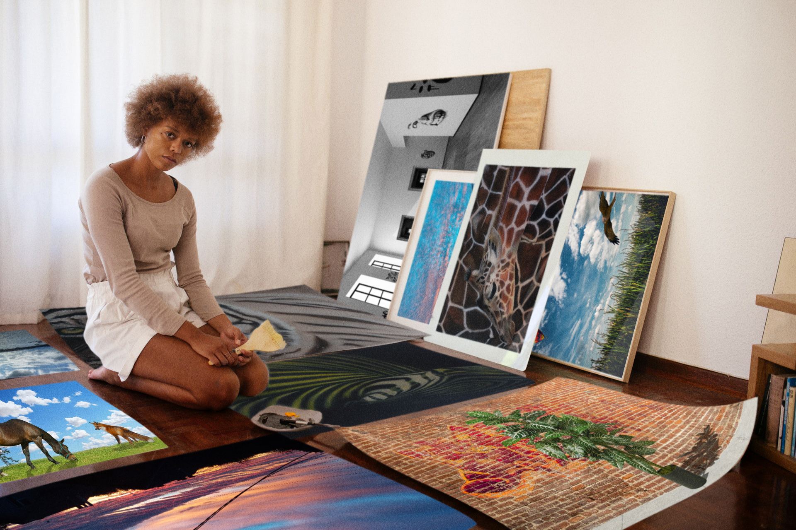

KOLEKCIJA MOJIH VJEŽBI
1. vježba - font

2. vježba - Bezierova krivulja, precizno crtanje

3. vježba - boja, transformacije


4. vježba - gradijenti, transparencija

Projektni zadatak - vektorska grafika

5. vježba - retuširanje

6. vježba - koloriranje

7. vježba - fotomontaža

Projektni zadatak - piksel grafika

Vježba 8 - cinemagraf

9. vježba - video obrada